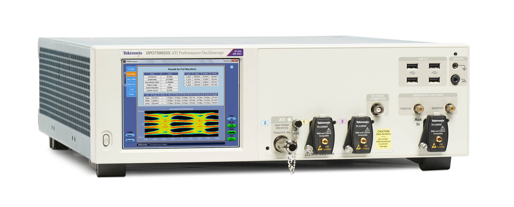
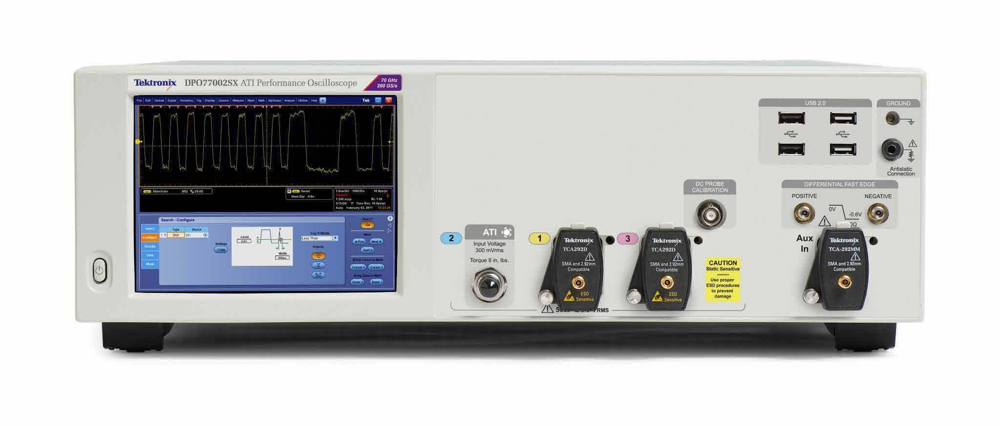
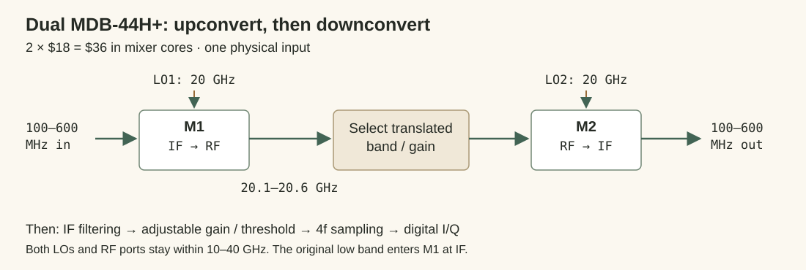
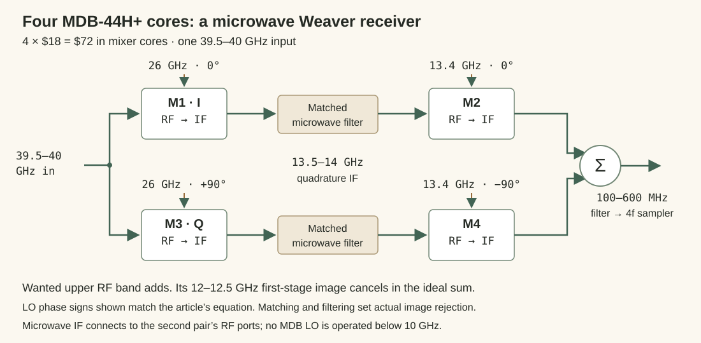

You can’t control what you can’t measure, and if it’s too expensive to measure, democracy is flawed.
{kind=link}

50 GHz analog bandwidth, 200 GS/s on one ATI input.
Priced special-order offer · Manufacturer photograph
{kind=link}

67 GHz specified bandwidth, 200 GS/s on one ATI input.
Priced special-order offer · Manufacturer photograph and specifications
These are ordinary catalog instruments in an extraordinary price bracket. A builder who wants to inspect fast electronics, study microwave signals, or make a new receiver encounters a capital-equipment purchase before reaching the interesting part of the work.
Meanwhile, an MDB-44H+ mixer costs $18. Its RF and LO ports reach 40 GHz, and its IF port spans DC to 15 GHz. Two cost $36. Four, enough for two quadrature conversion stages, cost $72. Microwave frequency translation is already a component-level capability. Access to useful measurement should follow it there.
The economic question is where the expensive conversion has to happen. Must every instantaneous voltage become a many-bit sample at the original RF frequency? Can a reference-clocked binary receiver carry the information? Or can inexpensive mixers move the useful band into a slower acquisition system?
Prices checked September 10, 2026, at quantity one. New offers are the main comparison; used scopes are a separate price reference. Original currencies, acquisition modes and delivery conditions are retained. Shipping and tax are additional unless stated. Download the comparison data and source links.
One input, three ways to acquire it
Start with one physical analog signal. A multibit ADC needs at least 80 GS/s to place DC–40 GHz inside its ideal first Nyquist band. Its analog input must also pass 40 GHz. Practical filtering needs transition room beyond the ideal 2f boundary.
The binary architecture considered here uses four phase-spaced decisions per carrier cycle: I at 2f and Q at 2f, for 4f in total. Its 40 GHz target therefore requires 160 Gbit/s of binary decisions from that one input. A 36 Gbit/s receiver gives a 9 GHz ceiling under this rule. A 112 Gbit/s PAM4 link, or sixteen independent 10 Gbit/s lanes, is a different quantity.
| Input upper frequency | Multibit, 2f | Binary four-phase, 4f |
|---|---|---|
| 40 GHz | 80 GS/s | 160 Gbit/s |
| 26 GHz | 52 GS/s | 104 Gbit/s |
| 12 GHz | 24 GS/s | 48 Gbit/s |
| 6 GHz | 12 GS/s | 24 Gbit/s |
A mixer changes the rate demanded of the backend by translating a selected band. A 500 MHz-wide signal near 40 GHz can become a 500 MHz-wide IF. That gives access to a high carrier without acquiring every frequency below it at once.
Carrier reach, instantaneous bandwidth and simultaneous full-band capture must stay separate. A swept waterfall observes different bands at different times. A full-band oscilloscope preserves an unpredictable event across its entire passband. A narrower capture can provide a useful time-domain view of the selected signal, but changing the display’s zoom cannot restore frequencies omitted from that acquisition.
First choice: buy the ADC itself
An 80 GS/s raw converter with a 40 GHz analog input, exported samples and a public new-chip price would make the direct route straightforward to compare. Searches across ADSANTEC, Analog Devices, Texas Instruments, Teledyne e2v, Jariet, Micram and FPGA RFSoC catalogs did not yield that complete purchase record.
The fastest headline is not always the accessible sample stream. Jariet Electra-M advertises 64 GS/s conversion and microwave input coverage, with up to 6.4 GHz digital bandwidth. AD9084 Apollo has 20 GS/s ADCs; its 28 GS/s number belongs to the DACs. Neither number can be copied into an 80 GS/s raw-acquisition row.
At the 6 GHz tier, a concrete raw-chip option does appear: ASNT7123-KMA, $3,325, with ten listed in stock. It accepts one differential analog input, converts at up to 16 GS/s with four bits, and exports four full-rate CML bit streams. Its stated analog input bandwidth is 20 GHz; its first Nyquist band reaches 8 GHz. Wider input response also permits filtered undersampling of a selected higher band.
Its clock specification matters: the internal ×16 PLL accepts 560–688 MHz, producing 8.96–11.008 GS/s. Reaching 12–16 GS/s requires a high-frequency external clock. The internal PLL therefore does not cover the 6 GHz target on its own.
| Instrument / offer | Price | Analog GHz | GS/s per input | ADC bits | Condition / source |
|---|---|---|---|---|---|
| SDS7604A H12 | $42,412.00 | 6 | 20 | 12 | New priced offer · specifications |
| DS80604 | $70,799.00 | 6 | 40 | 8 | New priced offer · specifications |
| DSOS604A | $103,691.00 | 6 | 20 | 10 | New priced offer · specifications |
The raw chip buys conversion. The scopes buy input conditioning, timing, acquisition memory, triggering, calibration and a working instrument. The Siglent and Keysight achieve their listed 6 GHz performance in the two-channel acquisition configuration; enabling more inputs reduces it. Rigol specifies 40 GS/s independently per channel. Native ADC bits are shown; processing modes that increase displayed resolution are not substituted for them.
At 40 GHz, finished instruments supply the attainable direct-acquisition comparison:
| Instrument / offer | Price | Analog GHz | GS/s per input | ADC bits | Condition / source |
|---|---|---|---|---|---|
| DPO75002SX | $440,000.00 | 50 | 200 | 8 | New, special order · specifications |
| DPO75902SX | $496,000.00 | 59 | 200 | 8 | New, special order · specifications |
| DPO77002SX | $516,000.00 | 67 | 200 | 8 | New, special order · specifications |
| DSOX95004Q | €326,880.00 | 50 | 160 | 8 | New reseller offer; availability on request · specifications |
The 50 GHz Tektronix is the least expensive of these three new US-dollar offers that meets the target. The others buy additional analog bandwidth. The euro-denominated Keysight offer is a new reseller listing for an obsolete model, with availability requested from the seller. Its 50 GHz/160 GS/s mode uses two channels; four-channel operation is 33 GHz/80 GS/s. Each rate above still describes one input.
| Instrument / offer | Price | Analog GHz | GS/s per input | ADC bits | Condition / source |
|---|---|---|---|---|---|
| 2 x DPO75002SX with sync cable and front panel | $140,000.00 | 50 | 200 | 8 | Used asking price · specifications |
| DPO77002SX | $147,997.00 | 67 | 200 | 8 | Used asking price · specifications |
The first used price buys the entire two-instrument lot, including its listed synchronization equipment. It has not been divided by two. Both figures are asking prices. The DPO77002SX’s faceplate uses its 70 GHz typical response; the table uses the manufacturer’s 67 GHz specified bandwidth.
The ADCs inside these instruments deserve attention too. Tektronix’s ATI architecture and LeCroy’s interleaved and band-interleaved acquisition divide one input internally, then reconstruct it. That is valid per-input acquisition. The finished scope’s rate does not imply that its custom sampling ASICs are separately purchasable at a published price.
Conventional SDRs already exceed 120 MHz
| SDR / offer | New price | RF tuning, GHz | Instantaneous GHz per input | ADC bits |
|---|---|---|---|---|
| USRP X440, 788670-01 | $32,231.00 | 0.03–4 | 1.6 | 12 |
| USRP X420, 789917-01 | $52,920.00 | 0.01–20 | 1 | 12 |
The X440 uses a two-channel FPGA image for 1.6 GHz instantaneous bandwidth per input. Its nominal 30 MHz–4 GHz input makes it a broad IF backend. The X420 reaches a 20 GHz carrier with 1 GHz instantaneous width. Both use 12-bit RFSoC ADCs. Their purchase prices include the whole instrument; the required US power cord adds $30, and host/network hardware is separate. These are substantial acquisition backends, not simultaneous DC–20 GHz oscilloscopes. X440 architecture and modes.
Second choice: use the receiver already inside a SerDes
A fast digital receiver already contains a threshold boundary, a sampling clock and a deserializer. The useful mode exposes the raw decisions to logic while the clock follows a reference. Protocol decoding is unnecessary. A data-following clock-recovery loop must be held in the appropriate mode so that an arbitrary analog waveform does not steer the measurement timebase.
AMD documents that mode directly: RXCDRHOLD = 1 and RXCDROVRDEN = 0 lock the GTY receiver to the reference. The raw datapath can bypass coding, gearbox, comma alignment and clock correction. UG578 v1.4, page 217.
| Hardware / offer | New price | Binary Gbit/s on one input | 4f ceiling, GHz | Delivery / configuration |
|---|---|---|---|---|
| PZ-KU3P-SOM, SOM Core Board | $479.00 | 25.0 | 6.25 | SOM; 5 listed in stock. 25 Gbit/s calculated from its 125 MHz reference. |
| XCKU3P-1FFVB676E | $1,546.36 | 25.785 | 6.44625 | Raw chip; 42-week order lead. FFVB676, −1 speed grade. |
| XCKU3P-2FFVB676E | $2,619.79 | 28.21 | 7.0525 | Raw chip; 3 listed in stock. FFVB676, −2 speed grade. |
| EK-U1-KCU116-G | $6,947.67 | 28.21 | 7.0525 | Development kit; 8 listed in stock. Programmable reference clock. |
These are four ways to obtain the same GTY architecture: a module, two raw speed grades and a development kit. No lane-count discount has been applied. The inexpensive module needs a carrier or connector breakout; its 25 Gbit/s operating point follows from a 125 MHz reference, QPLL feedback 100, full-rate PLL output and receive divider 1. The VCO runs at 12.5 GHz and the receiver makes 25 billion decisions/s, giving 6.25 GHz under 4f.
The FFVB676 package is part of the specification. Other packages with similar FPGA names have lower transceiver limits. The −1 and −2 rates above come from the matching DS922 package and speed-grade table; the module’s FPGA is identified in Puzhi’s product guide. Legal PLL ratios, reference quality and the analog input path still determine the usable implementation.
At 40 GHz, the missing purchase is a protocol-free 160 Gbit/s binary sampler with an internal PLL. Externally clocked high-rate demultiplexers, clock-recovery-only chips and multi-lane PAM4 gearboxes do not supply that combination.
A faster FPGA path remains worth pursuing: Altera FHT supports 48–58 Gbit/s NRZ on one input, enough for the 12 GHz tier by rate. Its published register map describes the relevant lock-to-reference field as status; explicit hold controls documented for FGT cannot simply be assigned to FHT. Until a uniform reference-clock mode is established, it stays outside the qualifying table. The 40 GHz goal remains intact; the 6 GHz table gives a lower-tier buying comparison rather than a claim that higher-frequency sampling is impossible.
Third choice: move the signal to affordable sampling
The least expensive retained 40 GHz mixer is the $18 MDB-44H+. Its 15 GHz IF port also makes it useful as an upconverter: put the lower-frequency signal into IF and take the translated result from RF. The frequency plan can therefore solve the lower RF-port cutoff without demanding an LO tunable from DC to 40 GHz.
| Core / offer | New price | RF GHz | LO GHz | IF GHz per output | LO dBm | Circuit / source |
|---|---|---|---|---|---|---|
| MDB-44H+ | $18.00 | 10–40 | 10–40 | DC–15 | +15 | Single real mixer · datasheet |
| MDB-54H+ | $45.07 | 20–50 | 20–50 | DC–20 | +15 | Single real mixer · datasheet |
| SMIQ-1844H+ | $80.66 | 18–40 | 18–40 | DC–7 | +18 | Integrated I/Q mixer · datasheet |
| ADMV1550ACCZ | $215.82 | 15–65 | 15–65 | DC–20 | +15 | Single real mixer · datasheet |
| ADMV1555ACCZ | $256.30 | 18–55 | 18–55 | DC–20 | +21 | Integrated I/Q mixer · datasheet |
The I/Q devices include quadrature hardware. Four separate $18 cores cost less than one $80.66 integrated I/Q mixer, but the functions are packaged differently: discrete cores also need coherent LO distribution, matching and recombination. Compare completed signal paths when deciding which integration is cheaper.
The RF and LO columns identify carrier reach. The IF column identifies the output path’s specified range, per I/Q output where applicable. Use the datasheet’s conversion-loss and variable-IF curves for the chosen translation, rather than assuming every combination has identical gain.
Two MDB-44H+ mixers: $36 in conversion cores

With a 20 GHz first LO, a 100–600 MHz input produces an upper translated band at 20.1–20.6 GHz. Select that band, feed it into the second mixer’s RF port, and mix against 20 GHz again to recover 100–600 MHz. Moving the second LO maps a different selected band into the acquisition window.
This serial up/down path needs two cores. Image selection comes from the frequency plan, filtering and subsequent quadrature processing. A common reference keeps the LOs coherent; retaining their phase relationship allows phase-preserving acquisition.
Actual DC can modulate a microwave LO through a DC-capable IF path. At that endpoint, input DC, mixer offsets and LO feedthrough must be separated by calibration. Coupling capacitors, transformers and switches still determine whether the physical route passes DC.
Four MDB-44H+ mixers: $72 for the Weaver quad

Split one 39.5–40 GHz input between M1 and M3. Drive their LOs with 0° and 90° versions of 26 GHz. The retained difference products occupy 13.5–14 GHz, inside the first pair’s DC–15 GHz IF range.
After matched microwave filtering, those two signals enter the RF ports of M2 and M4. A second quadrature LO at 13.4 GHz produces 100–600 MHz. The wanted sideband adds in the chosen signed combination. The opposite first-stage image, at 12–12.5 GHz input, has the reverse quadrature sense and its low-IF terms cancel ideally.
For a retained wanted tone, choose the first branch polarity to give:
δ = 2π(fRF − fLO1)
I₁(t) = K A cos(δt + φ)
Q₁(t) = K A sin(δt + φ)
y(t) = I₁(t) cos(2πfLO2t) + Q₁(t) sin(2πfLO2t)
= K A cos[2π(fRF − fLO1 − fLO2)t + φ]
The branch sign selects which quadrature sense adds. The filters select the relevant mixing products; matched amplitude and phase determine image rejection. K includes conversion and distribution gain. This is the useful four-mixer mechanism in Weaver’s two-stage method, with both physical conversion stages placed inside the MDB-44H+ port ranges. Quadrature mixing and image rejection.
The result is one real selected-band IF. Four-phase sampling then produces digital I/Q. For low-frequency inputs, the first pair can instead be routed as quadrature upconverters through their IF input ports, extending the dual path with the second matched branch. A switchable front end chooses the appropriate low-band or microwave route.
Each core needs its own nominal +15 dBm LO drive. An ideal two-way split requires +18.01 dBm ahead of the splitter, plus actual distribution loss. In the 40 GHz example, interstage filters and amplifiers must pass 13.5–14 GHz; a low-frequency IF VGA belongs after the second stage.
Lower carriers have cheaper integrated options
| Core / offer | New price | RF GHz | LO GHz | IF GHz per output | LO dBm | Circuit / source |
|---|---|---|---|---|---|---|
| SIM-83+ | $13.91 | 2.3–8 | 2.3–8 | DC–3 | +7 | Single passive double-balanced LTCC mixer · datasheet |
| SIM-63LH+ | $15.73 | 0.75–6 | 0.75–6 | DC–1.5 | +10 | Single passive double-balanced LTCC mixer · datasheet |
| LTC5510IUF#TRPBF | $17.00 | 0.001–6 | 0.001–6.5 | 0.001–6 | +0 | Single active double-balanced mixer · datasheet |
| ADL5801ACPZ-R7 | $17.56 | 0.01–6 | 0.01–6 | DC–0.6 | +0 | Single active Gilbert-cell mixer · datasheet |
| LTC5586IUH#PBF | $24.62 | 0.3–6 | 0.3–6 | DC–1 | +6 | Integrated I/Q demodulator with RF attenuator and IF gain · datasheet |
SIM-83+ is the least expensive retained single core; LTC5586 supplies inexpensive I/Q conversion with RF attenuation and IF gain integrated. Its DC–1 GHz figure is the 1 dB bandwidth of each IF branch. ADL5801’s 600 MHz IF specification uses the stated 200 Ω load. LTC5510’s broad input/output range requires external matching and begins at 1 MHz. These details decide whether a 500 MHz or 1 GHz selected band fits.
The rest of the analog path
| Part / offer | New price | Function | Specified range |
|---|---|---|---|
| LMX2595RHAT | $163.49 | PLL + VCO | 10 MHz-20 GHz synthesized output; reference-driven; 40-QFN 6 x 6 mm · datasheet |
| CY2-44+ | $22.94 | Frequency doubler | Input 6.2-20 GHz; output 12.4-40 GHz; nominal +15 dBm drive; about 14 dB typical conversion loss · datasheet |
| PMA3-15453+ | $67.01 | Microwave amplifier | 15-45 GHz amplifier; 12-MCLP 3 x 3 mm; check compression at the required LO output power · datasheet |
| ADL5205ACPZ-R7 | $33.46 | IF variable gain | Two 1.7 GHz amplifier channels; -9 to +26 dB in 1 dB steps; 40-LFCSP 6 x 6 mm · datasheet |
| ADRF5026BCCZN | $158.17 | Microwave switch | SPDT, 100 MHz-44 GHz; 20-LGA 3 x 3 mm; this part does not furnish a DC path · datasheet |
| XC7A25T-2CSG325I | $62.94 | IF FPGA | Artix-7 -2; up to 1.25 Gbit/s DDR LVDS per lane; 325-CSBGA. Timing only, not calibrated RF input bandwidth · datasheet |
The reference-driven LMX2595 reaches 20 GHz; multiplication can extend its LO upward. The doubler’s loss, amplifier compression and each mixer’s drive requirement have to agree. The ADRF5026 starts at 100 MHz, so a true DC route needs a suitable bypass. A 15–45 GHz amplifier cannot also be the low-band LNA. Preselection, attenuation, regulators, PCB transmission lines, connectors and calibration complete the instrument around these cores.
The $36 and $72 totals price the conversion cores only. Keeping that subtotal visible is useful: it shows which microwave function is cheap, while allowing the gain, clock and acquisition choices to be optimized separately.
Four phases carry more than phase
A four-phase input sampler distributes one thresholded waveform across I and Q observation times. I is sampled twice per carrier cycle; Q is sampled twice, displaced by a quarter-cycle. Alternating phase signs provide the first quadrature mixing operations. Accumulation and filtering lead into the second pair of DDS-controlled mixers, followed by recombination and channel selection.
Carrier phase: 0° 90° 180° 270° Observation lane: I Q I Q First mixer sign: + + − − I observations: 2fc Q observations: 2fc Total: 4fc binary decisions from one physical waveform
This is a digital Weaver receiver: two mixing stages, quadrature paths, filtering and a selected sideband. More DDS channelizers can inspect more sub-bands within the retained input stream. Their bandwidth comes from the shared acquisition, not from adding independent RF inputs.
Amplitude enters through the relationship between the waveform and its threshold reference. For a sinusoid of amplitude A and a known positive threshold θ, the fraction p of time above threshold is:
p = acos(θ / A) / π for A > θ A = θ / cos(πp)
Amplitude changes the crossing pattern. A frequency offset, threshold variation or calibrated excitation supplies observations at different signal phases; coherent accumulation makes the fraction measurable with increasing precision. Gain and threshold control extend the useful input range.
A second example makes the amplitude relationship explicit. Add independent uniform reference excitation u spanning −D to +D, then observe a binary decision b:
b = sign(Gx − θ + u) E[b | x] = (Gx − θ) / D when |Gx − θ| ≤ D
The mean binary decision is proportional to the input over that interval. Complex accumulation estimates amplitude and phase in a selected channel. Other characterized excitation distributions provide other invertible probability curves. These equations describe alternative ways to encode amplitude into crossing statistics; neither requires a many-bit RF sample at every instant.
At a fixed zero threshold, an isolated noiseless sinusoid has the same sign sequence for every positive amplitude. The reference-bearing part of the circuit is therefore essential. Weaver translation selects the channel and cancels its image; calibrated threshold/gain behavior supplies the voltage scale. Longer accumulation trades time resolution for precision. Quartz supplies a stable time/frequency reference; absolute volts require a characterized amplitude reference as well.
For the 100–600 MHz IF examples, the stipulated 4f budget is 2.4 billion decisions/s. Artix-7 DS181 lists up to 1.25 Gbit/s DDR LVDS reception per lane at the relevant speed grade and voltage. If two quadrature DDR paths observe the same input boundary at that rate, the combined budget is 2.5 billion decisions/s, or a 625 MHz 4f ceiling. Establishing that particular input/clock arrangement is part of implementation. A 1 GHz one-pin acquisition target needs four billion decisions/s or another demonstrated sampling arrangement; it cannot be obtained by relabeling the lane rate.
Microwave builders have more than one kind of mixer
Active Gilbert-cell mixers are one option. Passive Schottky diode rings, double-balanced MMICs and FET commutators also translate signals. Antiparallel diode subharmonic mixers reduce the LO frequency at the cost of a different loss and spur budget. Step-recovery diodes and nonlinear transmission lines generate harmonics for multiplication or harmonic mixing. Preselection keeps those many responses from becoming an ambiguous IF. Mixer fundamentals.
Gunn, dielectric-resonator and YIG-tuned oscillators are ways to generate the LO. They belong in the oscillator comparison, with phase noise, tuning range, reference locking and available drive included. Their price alone does not buy a mixer or acquisition path.
Satellite LNBs and amateur microwave converters deserve evaluation by their analog RF passband, IF output, filtering, gain and LO behavior. A voice-demodulation backend says little about a front end’s inherent bandwidth. A fixed-band LNB can be an excellent low-cost receiver for its band; continuous DC–40 GHz access requires a different routing and tuning contract.
Sampling bridges and equivalent-time scopes reach very high analog frequencies by observing repetitive signals across successive events. Delay-line and time-interleaved samplers distribute one input across staggered apertures. Photonic sampling moves part of that timing problem into optics. These are real alternatives, with repetition, skew, clocking and input distribution included in their respective system costs. None should acquire a fictional real-time sample rate by counting unrelated channels or repeated acquisitions as one event.
Measurement should be something we can build
The market offers expensive complete instruments and affordable microwave primitives, with a difficult gap between them. Custom acquisition silicon, restricted documentation and quote-driven procurement make it harder for a builder to own the path from input connector to samples.
A full-band one-shot waveform has a real acquisition cost: fast analog response, accurate apertures, data transport, memory and calibration. A selected-band measurement can move the signal first and spend much less on its sampling rate. Those are different products, and both deserve accessible building blocks.
The practical starting point is already on the table: $18 microwave mixers, a $36 up/down path, a $72 Weaver quad, inexpensive lower-band I/Q ICs, and reference-clocked FPGA receivers that expose raw decisions. Publish their schematics, phase relationships, gain settings, calibration procedures and sample formats. Make the complete path replaceable and understandable.
Microwave frequencies and high-speed interfaces should be engineering we can inspect and build, not authority we must rent.
Use the priced component and instrument data to choose the signal path your measurement actually needs—and build outward from it.